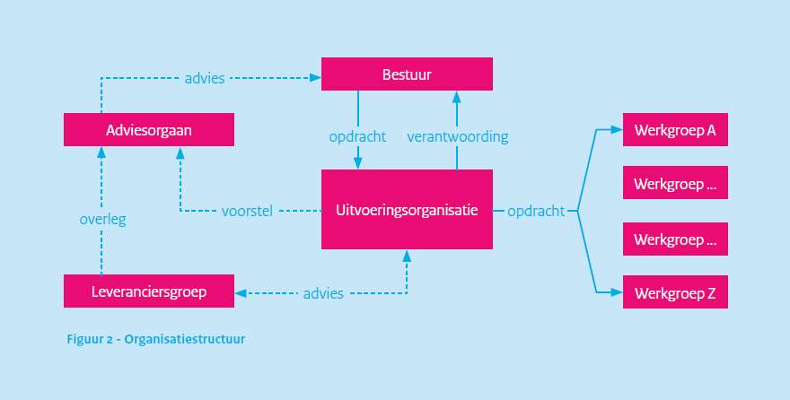
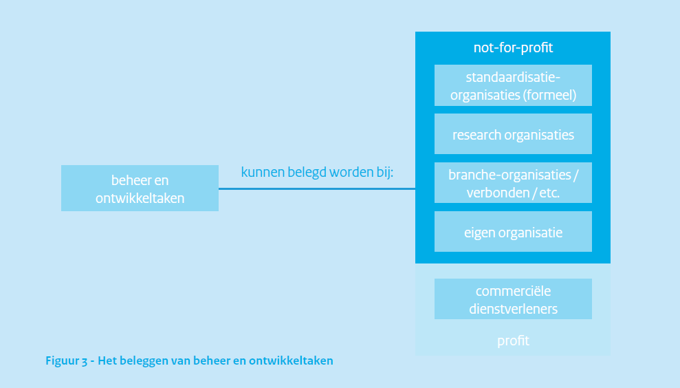
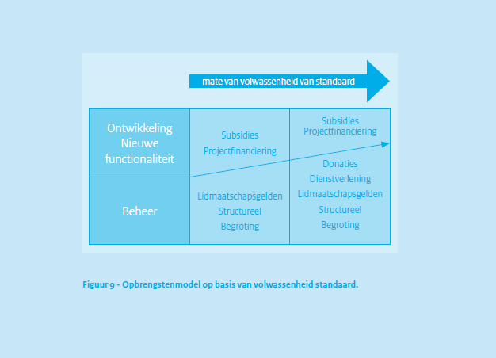
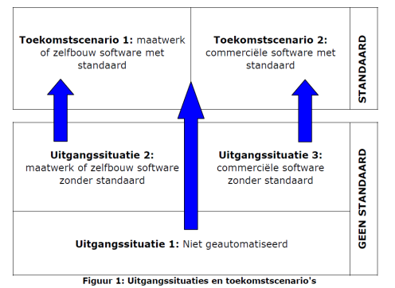
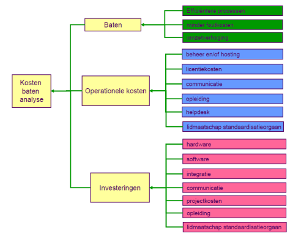

BOMOS Deel 2: De Verdieping, geeft zoals de titel al zegt een verdieping
van de onderwerpen uit het Beheer- en Ontwikkelmodel zoals in BOMOS Deel 1
is geïntroduceerd. De verdieping is gebaseerd op vele ervaringen,
best practices uit zowel de standaardisatiewereld en daarbuiten.
Status van dit document
Dit is een werkversie die op elk moment kan worden gewijzigd, verwijderd of vervangen door andere documenten. Het is geen door het Technisch Overleg goedgekeurde consultatieversie.
Documentbeheer
Datum
Versie
Auteur
Opmerkingen
2011
2.0
Erwin Folmer & Matthijs Punter
Toevoeging: De Best Practices
05/04/2022
3.0
Erwin Folmer, Erwin Kaats, Wouter van den Berg
Herziene versie met samenvoegingen uit andere BOMOS varianten
In de BOMOS Verdieping worden de componenten van BOMOS behandeld. Naast de
lagen operationeel, tactisch en strategisch worden implementatie ondersteuning
en communicatie besproken.
De BOMOS documentatie is ondervedeeld in een aantal delen
(zie BOMOS structuur).
1.1 Doel
Het doel van deze publicatie is organisaties te helpen bij het
opzetten van het beheer van standaarden en de verbetering
daarvan. Vragen waar deze publicatie een antwoord op geeft zijn:
Hoe kunnen we de standaard organisatorisch goed (door)ontwikkelen en beheren?
Hoe kunnen we ontwikkeling en beheer zo inrichten, dat er sprake is van een open standaard?
Hoe kunnen we de adoptie van onze standaard bij gebruikers verbeteren?
Deze concrete vragen waren oorspronkelijk de aanleiding tot het
opstellen van het Beheer- en OntwikkelModel voor Open Standaarden
(BOMOS), met handreikingen (best practices) voor een open invulling
voor het beheer. Sindsdien wordt BOMOS in de praktijk gebruikt, en is
er bij de gebruikers behoefte ontstaan om meer kennis en ervaringen te
delen rond het beheer van standaarden. Andere vraagstukken, zoals het
verbeteren van interoperaliteit met standaarden, de transparantie en
beheersbaarheid van een standaard zijn toegevoegd. En ook wordt BOMOS
gebruikt als gemeenschappelijke taal in de standaardisatiewereld.
De kern van BOMOS is het Fundament. Dat bestaat uit een basis
beschrijving van het Beheer- en Ontwikkelmodel, en een verdere
verdieping op basis van literatuur of praktijkervaringen. Het Beheer-
en Ontwikkelmodel is in de basis een activiteitendiagram, daarnaast
zijn rollen gedefinieerd die relevant zijn bij het beheer- en
ontwikkelproces van standaarden.
Daarnaast biedt de _Verdieping (dit document) meer verdieping door het delen
van met name best practices uit de standaardisatiewereld.
Deel 1 en Deel 2 samen vormen de basis van BOMOS.
Naast deze basis zijn er uitbreidingen voor BOMOS gemaakt door de
community, die het toepassen van BOMOS in concrete situaties, soms met
een wat andere context, kunnen helpen. We noemen dit de BOMOS
Aanvullende Modules, ook wel een Body of Knowledge genoemd, welke
dynamisch zullen zijn in de tijd.
Als we het hebben over BOMOS, dan bedoelen we daarmee de basis zoals
in Deel 1 en Deel
2
beschreven. De aanvullende modules zijn wel duidelijk met BOMOS
verbonden, maar hebben een eigen governance wat kan resulteren in een
eigen naam, eigen doelgroep, eigen beheer, etc. In het
beheerproces van BOMOS
wordt ook beschreven welke eisen er gesteld worden voordat
iets opgenomen wordt als BOMOS aanvullende module.
Bent u vanuit een beleidsmakende of besturende rol alleen op
hoofdniveau geïnteresseerd, dan biedt het fundament (deel 1) voldoende
achtergrond en context. Bent u zelf actief in
standaardisatiecommunities dan kunt u naadloos doorgaan met het lezen
van deel 2: De verdieping met best practices, waarin meer achtergrond
en praktische tips rond standaardisatie zijn opgenomen.
Wilt u BOMOS gaan toepassen dan is het ook raadzaam om de aanvullende
modules te gaan bekijken. Hier kunt u voorbeelden en tools vinden die
kunnen helpen bij implementaties van open standaarden. Ook vindt u
hier varianten op BOMOS. Deze implementatieprofielen maken BOMOS
toepasbaar op meer dan (semantische) standaarden alleen.
2. Strategie
In deze sectie worden onderwerpen verdiept die gerelateerd zijn aan
strategische onderwerpen uit het Beheer- en Ontwikkelmodel.
2.1 De ontwikkel- en beheerorganisatie (Activiteit Governance)
Deze activiteit bevat o.a. het beleid uitzetten over de eigen
bestuurlijke organisatie (zoals de rechtsvorm); het huishoudelijke
reglement (de charter), maar ook allianties vormen met andere
organisaties. Het regelen van besluitvorming is cruciaal.
2.1.1 Organisatiestructuur
In het BOMOS activiteitendiagram zijn de verschillende activiteiten
opgesomd die kunnen plaatsvinden in een
standaardisatiegemeenschap. Onderstaande
figuur schetst een globale
organisatiestructuur hiervoor. Een belangrijk uitgangspunt is de
scheiding tussen inhoudelijke activiteiten in de
uitvoeringsorganisatie en de besluitvorming door het bestuur.
Figuur 1 Organisatiestructuur
Het bestuur geeft opdracht aan een (not-for-profit)
uitvoeringsorganisatie die verantwoordelijk is voor een groot deel van
de beheertaken. Het bestuur verenigt de behoeften in dezen van zijn
achterban en heeft het mandaat namens dezen te besluiten over zaken
die de betreffende standaarden betreffen. Bestuur en
uitvoeringsorganisatie werken bij voorkeur met wederzijdse eenhoofdige
aanspreekpunten. Het bestuur is voornamelijk belast met de taak
'besluitvorming'. In de praktijk komt het bestuur een paar keer per
jaar bij elkaar, wat geen belemmering mag zijn voor de gewenste
besluitvorming. Het bestuur moet de uitvoeringsorganisatie voldoende
mandaat geven. In de praktijk zien we dat sommige besluiten ook
schriftelijk (e-mail) aan bestuursleden voorgelegd kunnen worden voor
goedkeuring, of dat de verantwoordelijkheid van bepaalde activiteiten
(bijv. communicatie) bij een enkel bestuurslid worden belegd. Dit
maakt het eenvoudiger om bilateraal overleg tussen de
uitvoeringsorganisatie en het verantwoordelijke bestuurslid te voeren
en ook besluiten tussentijds te nemen (en kan als alternatief dienen
voor de wederzijdse eenhoofdige aanspreekpunten).
De kern is dat duidelijk moet zijn vastgelegd welke besluiten in de
bestuursvergadering genomen dienen te worden; welke schriftelijk
(e-mail) voorgelegd kunnen worden, welke door een specifiek
bestuurslid genomen kunnen worden, en voor welke besluiten het mandaat
bij de uitvoeringsorganisatie ligt. In de praktijk worden vaak
jaarplannen gebruikt voor de opdrachtformulering van het bestuur aan
de uitvoeringsorganisatie. Op basis van rapportages over het jaarplan
legt de uitvoeringsorganisatie dan verantwoording af aan het
bestuur. Het jaarplan beschrijft welke taken uitgevoerd moeten worden;
welke werkgroepen er zijn of opgestart moeten worden, wat de doelen
voor de werkgroep zijn, etc. Het jaarplan wordt goedgekeurd door het
bestuur en is daarmee de opdracht voor de uitvoeringsorganisatie. Het
Beheer- en Ontwikkelmodel kan als kapstok dienen om de taken in het
jaarplan te benoemen. Het jaarplan maakt het ook goed mogelijk om
afspraken te maken over uit te besteden taken. Feitelijke
standaardontwikkeling vindt plaats in werkgroepen waarin de gebruikers
van de standaarden participeren. De werkgroepen worden door de
uitvoeringsorganisatie gecoördineerd. Veelal worden ook de
daadwerkelijke uitwerkingen opgesteld door de uitvoeringsorganisatie
op basis van discussies in de werkgroepen. De uitkomst van de
werkgroep, een nieuwe versie van een standaard, kan door het bestuur
vastgesteld worden en uitgebracht worden als nieuwe versie. De
besluitvorming, wie (bestuur/werkgroep) bepaalt wat, moet helder
geregeld zijn.
Bij voorkeur wordt onderscheid gemaakt tussen verschillende zwaartes
van wijzigingen in standaarden, zodat de lichtste wijzigingen door de
betreffende werkgroep of de uitvoeringsorganisatie zelf kunnen worden
afgehandeld en alleen de meest fundamentele wijzigingen betrokkenheid
van het bestuur vragen, tot aan een bestuursbesluit. Een werkgroep die
continu overruled wordt door het bestuur is niet werkbaar.
Eventueel kan een adviesorgaan opgericht worden om het bestuur met
gevraagd en ongevraagd advies ter zijde te staan. De uitkomst van een
werk- groep zal in dat geval als voorstel naar het adviesorgaan gaan
die daarover aan het bestuur zal adviseren. Het adviesorgaan bestaat
bij voorkeur uit onafhankelijke en onbetwiste deskundigen, en kan een
middel zijn om de onafhankelijkheid en expertise te versterken. Het is
van belang dat deze deskundigen gekozen worden op basis van kennis en
ervaring en niet op basis van belangen of vertegenwoordiging van een
organisatie; immers aan hen wordt enkel gevraagd om inhoudelijk
advies. De vertegenwoordiging van belangen is gevestigd in het
bestuur.
Een typische inhoudelijke categorische afbakening van werkgroepen
vindt plaats langs de volgende (gelaagde) lijnen:
Architectuur.
Processen/services.
Data/gegevens/berichten.
Technische standaard/transactiestandaard.
Beveiliging.
Een andere veel gebruikte afbakening is op basis van het
probleemdomein, bijvoorbeeld SETU heeft gewerkt met een tweetal
werkgroepen, te weten Bemiddeling en Verwerking. De werkgroep
Bemiddeling houdt zich bezig met de standaarden van offerteaanvraag
tot aan de plaatsing van een uitzendkracht, terwijl de werkgroep
Verwerking de standaarden van plaatsing tot aan factuur tot haar scope
rekent. In de praktijk zullen bij complexere standaarden bepaalde
categorieën werkgroepen (bijv. 'gegevens') weer onderverdeeld worden
in werkgroepen per probleemdomein (bijv. 'facturatie'), waarmee een
combinatie van beide indelingen wordt gerealiseerd.
Bijzondere aandacht verdienen de leveranciers. Dit is regelmatig een
heet hangijzer bij non-profit beheerorganisaties. Voor het welslagen
van een standaard (zonder juiste implementatie geen werkende
standaard') vaak cruciaal, maar leveranciers kunnen ook conflicterende
belangen hebben. In beginsel kunnen leveranciers gewoon als deelnemer
in de standaard acteren en rollen in de werkgroepen vervullen tot aan
deelname in het bestuur. De praktijk laat zien dat
softwareleveranciers veelal zeer nuttige bijdragen leveren in
werkgroepen waardoor het zeker aan te raden is om leveranciers toegang
tot de werkgroepen te verlenen. Vaak heerst er angst dat leveranciers
te nadrukkelijk een stempel gaan drukken op de standaard. Een aparte
leveranciersgroep zoals aangegeven in bovenstaande
figuur is dan een optie waarmee de
leveranciers enerzijds een platform wordt geboden terwijl ze
anderzijds buiten de werkgroepen en bestuur kunnen worden
gehouden. Softwareleveranciers zijn dan verenigd in een
leveranciersgroep, die de uitvoeringsorganisatie van advies kunnen
voorzien en overleg kunnen voeren met het adviesorgaan.
De besluitvorming binnen de werkgroep kan afhankelijk zijn van de
mogelijke deelname van leveranciers, en ook afhankelijk zijn van de
opstelling van de leveranciers. In de praktijk zal de keuze voor de
mate van invloed ook afhangen van de manier waarop de gemeenschap is
georganiseerd; indien de ontwikkeling van de standaard gedreven wordt
vanuit het belang van de softwareleveranciers dan zullen deze een
grotere invloed (willen) uitoefenen op 'hun' standaard. Wordt de
ontwikkeling gedreven vanuit een (overheids-)gebruikersbehoefte dan
zullen deze een grotere invloed (willen) uitoefenen.
In het figuur is een eenvoudige basisstructuur geschetst van bestuur,
uitvoeringsorganisatie en werkgroepen. Facultatief kan daar een
adviesorgaan en/of leveranciersgroep aan toegevoegd worden. Naast deze
geschetste mogelijkheden zijn er nog vele alternatieven, zowel
eenvoudiger als complexer. Welke structuur ook gekozen wordt, bij
voorkeur worden de verslagen van de verschillende gremia openbaar ter
beschikking gesteld.
2.1.2 Rollen en activiteiten.
In deel 1 zijn de rollen voor het ontwikkel- en beheerproces gedefinieerd,
en zijn ze gekoppeld aan de hoofdactiviteiten van BOMOS. Omgekeerd
kijken we er nu in meer detail naar. Onderstaande tabel geeft vanuit
de rollen aan in welke BOMOS activiteiten ze betrokken kunnen zijn;
dat laat ook zien dat een 1-op-1 koppeling tussen rol en activiteit
niet werkt.
Rol
BOMOS activiteit
Houder
Governance
Visie
Rechtenbeleid
Adoptie en erkennig (beleid)
Opleiding (beleid)
Kwaliteitsbeleid benchmarking(beleid)
Community (vaststellen)
Klachtenafhandeling
Implementatieondersteuning (beleid)
Financier
Financiën
Autorisator
Architectuur (vaststellen)
Initiatie (belsuitvorming)
Expert
Architectuur (uitvoeren en advisering)
Initiatie (advies)
Functioneel beheerder
Community (uitvoeren)
Kwaliteitsbeleid benchmarking (uitvoeren)
Initiatie (proces)
Wensen en eisen
Ontwikkeling
Uitvoering
Documentatie
Implementatieondersteuning (uitvoeren)
Technisch beheerder
Draagt bij aan operationeel
Distributeur
Promotie
Publicatie
Gebruiker
Geconsulteerd operationeel
Noot
2.1.3 Beheertaken uitvoering
Voor de invulling van ontwikkelen beheertaken in een
organisatiestructuur zijn verschillende mogelijkheden, variërend van
het beleggen bij een standaardisatieorganisatie tot het volledig zelf
invullen in een eigen organisatie. Het is geen doel op zich om voor
elke standaard een eigen beheren ontwikkelorganisatie op te tuigen. De
praktijk laat zien dat weinig bestaande organisaties zijn berekend op
het complete takenpakket, waardoor toch vele
standaardisatiecommunities hebben besloten een eigen organisatie op te
tuigen. Een deel van de taken wordt dan belegd bij de eigen
organisatie, maar een deel van de taken kan ook belegd worden bij
andere soorten organisaties. Onderstaande
figuur noemt hier (andere)
standaardisatieorganisaties, research-organisaties en
brancheorganisaties.
Figuur 3 Beleggen van ontwikkeltaken
Het model maakt onderscheid tussen not-for-profit en profit
organisaties. Dit onderscheid is relevant in het kader van openheid
(zie sectie over
openheid). Indien
het beheer van een standaard is belegd bij een profit-organisatie kan
er geen sprake zijn van een open standaard! Dat wil niet zeggen dat
commerciële organisaties geen open standaarden kunnen ontwikkelen in
opdracht van een bestuur (organisatie), of na ontwikkeling doneren aan
een not-forprofit beheerorganisatie. Het ontwikkelen en beheren van
standaarden dient altijd not-for-profit te gebeuren, waarbij een
not-for profit organisatie wel het meest voor de hand liggend is.
Een eerste voor de hand liggende mogelijkheid is het beleggen van de
beheertaken bij formele standaardisatieorganisaties. De wereld is hier
wel veranderd in vergelijking met dertig jaar geleden toen het
merendeel van de standaarden door deze formele organisaties werd
ontwikkeld. In de huidige tijd wordt het merendeel van de standaarden
buiten de formele standaardisatieorganisaties ontwikkeld in allerlei
vormen van consortia, en dat aantal blijft groeien. Ook zien we weer
steeds meer complexe samenwerkingsverbanden tussen
standardisatie-organisaties ontstaan. Voor de semantische standaarden
speelt dit in extreme mate. Deels heeft dit te maken met de traagheid
van processen bij formele standaardisatieorganisaties, maar
voornamelijk het gebrek aan inhoudelijke kennis en expertise. Voor
semantische standaarden is domeinkennis essentieel.
Dit wil niet zeggen dat formele standaardisatieorganisaties geen
waarde hebben, integendeel. Op een aantal punten hebben ze potentieel
een belangrijke toegevoegde waarde. Bijvoorbeeld om de status van de
standaard te verhogen. Zo is NEN3610 ontwikkeld door Geonovum, maar
voor extra status ook uitgebracht als NEN-norm. Daarnaast is
secretariële ondersteuning voor werkgroepen ook een prima taak die
extern belegd kan worden.
De inhoudelijke kennis zal echter altijd zelf georganiseerd moeten
worden. Onderzoeksorganisaties, zoals universiteiten en instituten,
zijn een andere mogelijkheid om taken bij te beleggen. Voordeel is de
schat aan inhoudelijke kennis, maar mogelijk ook een gebrek aan
domeinkennis of kennis van het specifieke gebruik. Het
tegenovergestelde is het geval bij brancheorganisaties; voordeel hier
is de uitmuntende domeinkennis, maar nadeel is juist een gebrek aan
inhoudelijke standaardisatie/ICT kennis. Vaak zijn (semantische)
standaarden voor brancheorganisaties een ver van hun bed show. Het
onderwerp wordt al snel afgedaan als iets van techneuten, wat het in
de kern niet is; juist voor semantiek is domeinkennis van groot
belang.
Een eigen organisatie oprichten is een mogelijkheid, evenals
commerciële dienstverleners inschakelen. Dat laatste is wel op
gespannen voet met de openheidprincipes. De eigen organisatie is de
meest gekozen optie voor de kern van ontwikkelen beheertaken. Velen
domeinen kennen inmiddels eigen organisaties die kennis hebben van
zowel het domein als standaardisatie, bijvoorbeeld (Geonovum,
EduStandaard, CROW, Informatiehuis Water, SETU, etc.). Tot de kern van
hun werk behoren de strategische beheeractiviteiten zoals
geïdentificeerd in het model, en in grote mate ook de tactische en
operationele activiteiten. In deze situatie zijn bepaalde activiteiten
eenvoudig en zelfs beter om uit te besteden.
Een aantal suggesties:
Moduleontwikkeling;
Moduleontwikkeling is riskant om binnen de ontwikkel- en
beheerorganisatie te laten plaatsvinden. Daarmee wordt men ook
leverancier en concurrent van partijen in de gemeenschap. Beter is om
moduleontwikkeling te stimuleren buiten de ontwikkel- en
beheerorganisatie, mogelijk in de vorm van open source software. Dit
kan andere leveranciers ook bewegen om de standaard te gaan
ondersteunen en/of betrokken te raken bij de ontwikkeling daarvan. De
beste aanpak is afhankelijk van de kenmerken van de community.
Certificeren;
Essentieel bij certificeren is de onafhankelijkheid van de
certificerende instelling. Gebruikelijk is dat de ontwikkel- en
beheerorganisatie het toetsingskader opstelt, en vervolgens de
daadwerkelijke toetsing (op basis van het toetsingskader) uitbesteedt
aan externe partijen die zich specifiek richten op het toetsen en
certificeren.
Architectuur/Roadmapping/Benchmarking;
Ondersteuning en uitvoering hiervoor past uitstekend bij een
research-organisatie in brede zin (Naast kennisinstituten, ook
organisaties zoals CBS voor benchmarking). Met name voor benchmarking
geldt dat dit beter bij een externe organisatie belegd kan worden.
Communicatie;
Past vaak goed bij een brancheorganisatie die al een
communicatieapparaat heeft ingericht. Uiteraard moet er dan wel een
brancheorganisatie zijn die naadloos aansluit bij de standaard en die
bereid is de communicatie als belangrijke taak mee te
nemen. Communicatie rondom het beheer- en ontwikkelproces van een
standaard vraagt om specifieke kennis van dat beheer en heeft een
specifieke doelgroep zoals softwareleveranciers. Dit dient door een
brancheorganisatie onderkend te worden. Andere opties zijn
communicatieafdelingen van een andere partner organisatie.
Op hoofdniveau kunnen we concluderen dat er de keuze is om de
ontwikkel- en beheertaken te beleggen bij:
Bestaande organisaties.
Nieuwe organisaties.
Combinatie van beiden.
Het beleggen van alle taken bij een bestaande situatie klinkt ideaal,
maar er is geen organisatie die alleenstaand voor het complete
takenpakket is toegerust. Ook organisaties als NEN, Forum
Standaardisatie, etc. zijn daar niet op ingericht.
Daardoor is het in de praktijk vaak noodzakelijk om een nieuwe
organisatie op te richten, als er binnen het domein nog geen
organisatie bestaat gericht op standaardisatie. Optie 3, de combinatie
van beide, betekent dat bepaalde taken door deze (nieuwe) specifieke
domein standaardisatie organisatie worden opgepakt en andere taken
door ander type organisaties, conform de beschrijving in deze
paragraaf over het uitbesteden van taken.
2.1.4 De organisatievorm
Of het nu slechts een deel van de taken of alle taken door de nieuwe
organisatie uitgevoerd moeten gaan worden, de nieuwe organisatie moet
in beide gevallen opgericht worden waarvoor een rechtsvorm nodig
is. Nederland kent tal van organisatie rechtsvormen. Openheid van de
standaard is absoluut een essentieel uitgangspunt. De definitie van
openheid schrijft voor dat de (besluitvorming van de) standaard belegd
wordt bij een not-for-profit organisatie. Daarmee worden een groot
deel van de organisatievormen uitgesloten, en zijn slechts enkel voor
de hand liggen, te weten:
Stichting.
Vereniging.
Overheidsorganisatie (als verzamelterm).
De stichting: Een stichting is een rechtspersoon en wordt
opgericht bij notariële akte, door één of meerdere natuurlijke of
rechtspersonen. In de regel heeft een bestuur een voorzitter,
secretaris en penningmeester. Het bestuur is het enige verplichte
orgaan van een stichting. Daarnaast kan er nog een raad van toezicht
zijn, die toezicht houdt op het stichtingsbestuur. In tegenstelling
tot een vereniging heeft een stichting geen leden. Een stichting kan
wel donateurs hebben, maar die hebben geen zeggenschap. Een
stichting kan ook vrijwilligers hebben.
De vereniging: Een vereniging is een rechtspersoon voor de
Nederlandse wet. Een vereniging wordt meestal opgericht door bij de
notaris hiervan een akte op te maken. Dit is niet noodzakelijk, maar
zonder notaris heeft de vereniging beperkte rechtsbevoegdheid (de
bestuurders zijn hoofdelijk aansprakelijk). Wanneer een vereniging
bij de notaris opgericht is, zijn er ook statuten. Hierin staat
tenminste het doel van de vereniging, de verplichtingen van de
leden, het bijeenroepen van de algemene (leden)vergadering en het
benoemen/ontslaan van de bestuurders. Een vereniging heeft een doel
dat nagestreefd wordt. Dit doel mag niet het verdelen van winst
onder de leden zijn. Wat niet wil zeggen dat er geen winst gemaakt
mag worden, maar deze moet ingezet worden voor een bepaald doel
(zoals het doel van de vereniging, kennisdeling, verbetering van de
kwaliteit, liefdadigheid, etc.). Een vereniging heeft leden. Dit
zijn mensen die lid zijn van de vereniging omdat zij het doel
steunen. De leden betalen meestal contributie om de vereniging
draaiend te houden. Leden hebben invloed in het beleid van de
vereniging via een algemene (leden)vergadering (ALV). Zo'n
vergadering wordt minstens jaarlijks gehouden en elk lid is hiervoor
uitgenodigd en stemgerechtigd. De ALV heeft alle bevoegdheden die
niet door de wet of de statuten geregeld zijn en is dus het hoogste
orgaan van de vereniging.
De overheidsorganisatie: Er zijn verschillende vormen van
overheidsorganisaties, waardoor een korte bespreking onmogelijk
is. Het inzetten van een overheidsorganisatie zou op verschillende
manieren kunnen: één overheidsorganisatie als beheerorganisatie voor
alle aan de overheid gerelateerde standaarden, of per standaard één
overheidsorganisatie. Daarnaast kan een enkele overheidsorganisatie
de uitvoering van het beheer op zich nemen, maar kunnen meerdere
overheden zich ook verenigen. Dit kan bijvoorbeeld in een
vereniging. De keuze van de rechtsvorm dient weloverwogen te
gebeuren, waarbij ook zaken als de eenvoud van het opzetten moet
worden meegenomen. Bij een stichting speelt dat het mogelijk lastig
is voor overheidspartijen om aan een stichting deel te nemen, en dat
een stichting geen leden mag hebben. Bij een vereniging speelt de
grote macht van de ALV. Met een stichting en vereniging is het wel
eenvoudig om openheid aan te tonen. Bij zowel de stichting als de
vereniging zijn de statuten belangrijk; deze regelen in feite het
mandaat van de rollen in de organisatie.
Ondanks het feit dat een stichting geen leden kan hebben spreekt men
bij HL7 Nederland wel over leden, maar hanteert men strikt formeel de
term aangeslotenen. SETU kent geen leden, maar wel
participanten. Een samenwerkingsverband zonder rechtsvorm kan in de
praktijk goed werken voor het beheer maar kan in praktische zaken weer
nadelig zijn doordat het samenwerkingsverband als zodanig geen
bevoegdheden heeft tot het aangaan van overeenkomsten; hierbij zal
altijd één van de partners deze overeenkomst moeten aangaan. Mogelijke
nadelen die hieraan kleven zijn het verlies van identiteit; het
gebonden zijn aan regels en beperkingen van de partner; minder
slagvaardigheid etc. Het voordeel van een dergelijke organisatievorm
is dat deze eenvoudig is in te richten en op te heffen zonder
juridische consequenties. De organisatie-inrichting kan in enige mate
de vrijblijvendheid reduceren of op zijn minst expliciteren. De
vrijblijvendheid van de deelnemers in standaarden is zeker een serieus
aandachtspunt in het kader van een duurzaam toegepaste standaard.
Noot
2.1.5 Visie
Inhoudelijke visie ontwikkelen over de richting van de standaard in de
context: De plek op de horizon op de lange termijn. Een compacte
vertaling in bijvoorbeeld een factsheet van deze visie kan ook zeer
nuttig zijn in de communicatie rond de standaard en het bevorderen van
adoptie van de standaard. Ook moet er aandacht zijn voor innovatie;
veel organisaties gebruiken daar hulpmiddelen voor als een radar, of
specifiek een tech-radar; daarin worden innovatieve ontwikkeling
geplot op een radar op basis van tijd en impact. Dit soort
hulpmiddelen zijn ook hier van toepassing. De visie voor een standaard
is op zich niet anders dan de visie rond een bedrijf/product,
etc. Vandaar dat BOMOS hier geen specifieke invulling voor standaarden
aan geeft. De verdere detailering van de in de visie benoemde
innovatie onderwerpen zal veelal op tactisch niveau plaatsvinden,
bijvoorbeeld als onderdeel van Architectuur.
2.2 De kosten en de opbrengsten (Activiteit: Financiën)
Een financieel model voor de lange termijn hebben die opbrengsten
garandeert in overeenstemming met de behoefte is het voornaamste doel
van deze activiteit. Een standaard ontwikkelen en beheren kost
structureel geld. De hoeveelheid is sterk afhankelijk van de context
en dynamiek van de standaard en het is niet eenvoudig hier generieke
uitspraken over te doen. De eerste ontwikkelingen starten vaak met
projecten die beginnen met budgetten vanaf 30.000 euro tot vele malen
groter. Een eerste project levert ook niet direct een standaard op,
maar heeft in een werkgroep de mogelijkheden en scope van een
standaard onderzocht. Na de initiële ontwikkeling moet de standaard
structureel worden beheerd en doorontwikkeld. Er zijn cases bekend die
het beheer met budgetten in de order van 250.000 tot 900.000 euro (per
jaar) hebben georganiseerd. Tot op heden is hier weinig onderzoek naar
gedaan, met uitzondering van de Ethernet standaard: deze technische
standaard heeft $10 miljoen dollar gekost om te ontwikkelen. Andere
informatie bekend uit literatuur is dat de opbrengsten van verkoop van
ISO standaarden voor de helft voorziet in de kosten die ISO maakt in
de ontwikkeling en beheer van de ISO standaarden.
2.2.1 De baten van standaardisatie generiek
Er mogen dan weinig cijfers beschikbaar zijn maar er is voldoende
economisch onderzoek gedaan naar de vooren nadelen van
standaardisatie. Bijgaande tabel geeft een samenvatting (op basis van
Blind, K. (2004). The economics of standards; theory, evidence,
policy):
Positive effects
Negative effects
Compatability / interface
Network externalities
Monopoly
Avoiding Lock-ins
Increased variety of systems products
Variety reduction
Economies of scale
Reduced choice
Building focus and critical mass
Market concentration
Information standards
Facilitates trade
Regulatory capture
Reduced transaction costs
Voor semantische (domein) standaarden zijn met name relevant:
Positieve netwerkeffecten (wordt waardevoller met meer gebruikers).
Voorkomen van vendor lock-ins.
Toename variëteit in producten en diensten.
Schaalvoordeel.
Verlagen transactiekosten.
2.2.2 Kosten en opbrengsten
Wel is het mogelijk om te kijken naar de mogelijke kostenposten en
opbrengsten van het beheer van standaarden. De balans vat deze samen.
Debet
Credit
Ontwikkelkosten
Structureel begroting
Beheerkosten
Projectfinanciering
Communicatie
Lidmaatschapsgelden
Lidmaatschapskosten (+reiskosten)
Subsidie
Bedrijfsvoering (accountant)
Dienstverlening
Huisvesting
Licenties
Goodwill
Tooling (Licenties)
Financieringskosten
2.2.2.1 Debet
De voornaamste kosten zullen in principe gerelateerd zijn aan de
personeelskosten voor de primaire taak van de organisatie; de
ontwikkeling van nieuwe functionaliteit en het onderhouden van al
bestaande functionaliteit in de standaarden. De standaarden worden
gepubliceerd en mogelijk ook promotioneel onder de aandacht gebracht
waarvoor communicatiekosten gemaakt worden. Bij communicatiekosten kan
men naast de personeelskosten denken aan kosten voor het optuigen van
een communicatieplatform, het organiseren van bijeenkomsten, de
website en bijvoorbeeld drukwerk.
Vaak worden er specifieke software tools gebruikt zoals
datamodelleersoftware waarvoor licentiekosten betaald moeten
worden. Een andere potentiële kostenpost is de deelname aan verwante
standaardisatieorganisaties waarvoor lidmaatschapskosten worden
gerekend. In verschillende communities kan deze post variëren van 0
tot 15% en hoger, van het totale budget. Daarbij zijn dan vaak ook
reiskosten noodzakelijk voor de internationale
bijeenkomsten. Standaard bedrijfsvoeringkosten zijn ook van toepassing
zoals ICT voorzieningen (kantoorautomatisering), huisvesting en kosten
van de accountant voor de jaarrekening. Goodwill kan ook als
kostenpost worden beschouwd. Goodwill is dan de investeringen die men
in de omgeving moet plegen die niet direct bijdragen aan de standaard
zelf, zoals het deelnemen aan bijeenkomsten en accountmanagement. Vaak
is dit een investering om goodwill van anderen in return te krijgen
(als opbrengst). Tot slot zijn er de financieringskosten waarmee de
activiteiten worden bedoeld om inkomsten te genereren voor de
standaardisatieactiviteiten. Afhankelijk van het financieringsmodel
kunnen dat kosten zijn voor het verwerven van leden tot aan het
aanvragen van subsidies en dergelijke.
De verhoudingen kunnen door de tijd verschuiven, bijvoorbeeld in een
bepaalde fase van een standaard kan er pas op de plaats gemaakt worden
met de ontwikkeling en wordt de focus verlegd op de communicatie om de
adoptie van de standaard te bevorderen. In lijn hiermee zullen kosten
verschuiven van ontwikkeling naar communicatie.
2.2.2.2 Credit
Potentiële bronnen van inkomsten zijn bijvoorbeeld stakeholders die
geld uit de structurele begroting beschikbaar stellen voor de
standaard. Dat kan een ministerie zijn, maar even goed een branche of
belangenorganisatie. Op dezelfde manier kunnen deze organisaties ook
tijdelijk voor een bepaald doel (project)financiering beschikbaar
stellen. Daarnaast, aangezien standaarden een maatschappelijk en
economisch belang hebben, zijn er vaak mogelijkheden voor
subsidie. Deze subsidies zijn ook een mogelijke bron van inkomsten;
maar het verkrijgen daarvan kan omslachtig zijn, en er kunnen
beperkende voorwaarden zijn voor de inzet van het geld.
Structurele financieringsvormen verdienen de voorkeur boven tijdelijke
(project) financieringsvormen. Niemand zal namelijk een standaard
willen implementeren waarvan het onzeker is of die volgend jaar nog
wel beheerd wordt omdat de standaard werkt met aflopende
projectfinanciering. Daarnaast is structurele financiering een eis
voor opname op de pas-toe of leg-uit lijst met open standaarden van
het Forum Standaardisatie.
Andere potentiële opbrengsten zijn gerelateerd aan de standaard
zelf. Het is mogelijk om geld te vragen voor zowel het downloaden van
de documenten met specificaties, of het kan gekoppeld worden aan het
gebruik van de standaard. Beide vormen zijn niet bevorderlijk voor de
adoptie van de standaard. In de praktijk is veel weerstand tegen het
betalen voor het standaardisatiedocument, ongeacht het bedrag. Dit is
wel het huidige business model dat het NEN hanteert voor haar
normen. Ook in het kader van openheid (zie hoofdstuk 8) is het niet
verstandig om geld te vragen voor de documenten of het gebruik van de
standaard. Hoe beperkt het bedrag ook moge zijn, de standaarden worden
er op zijn minst minder open door. In de praktijk worden dan ook
regelmatig draft versies van deze standaarden gebruikt, omdat deze nog
gratis verspreid mogen worden.
Dienstverlening gerelateerd aan de standaard is een andere
mogelijkheid. Te denken valt daarbij aan consultancy over de standaard
of implementatieconsultancy. Diensten aanbieden bijvoorbeeld in de
vorm van een centrale berichtenmakelaar, of andere vormen van het
leveren van software/hardware zijn ook mogelijkheden. Tot slot zouden
er inkomsten gekoppeld kunnen worden aan dienstverlening op het gebied
van validatie en certificatie. Al deze vormen van dienstverlening
brengen wel een risico met zich mee. Naast een beheerorganisatie wordt
de organisatie ook een dienstverlener. Dat kan conflicterend zijn:
vooral door andere dienstverleners in de markt wordt dat opgevat als
oneerlijke concurrentie. Ook kan er een verwevenheid ontstaan tussen
het dienstverleningsproduct en de standaard zelf, indien blijkt dat
het eigen product een bepaald deel van de standaard niet goed
ondersteunt, kan ervoor gekozen worden de standaard te wijzigen in
plaats van te investeren in een product dat de standaard wel volledig
ondersteunt. Duidelijke scoping van welke dienstverlening de
beheerorganisatie op zich neemt en welke men overlaat aan de markt is
essentieel.
Naast de structurele financiering uit de begroting van een belangrijke
stakeholder is de meest voor de hand liggende inkomstenbron een
(lidmaatschaps)bijdrage van de stakeholders. Hiervoor kan op basis van
de trits 'belang-betaling-zeggenschap' de kosten verhaald worden bij
dezelfde partijen waar ook de baten liggen. Verschillende typen
organisaties kunnen verschillende bijdrage voor tarieven hebben
gerelateerd aan de potentiële opbrengsten van de stakeholder door het
gebruik van de standaard. Het spreekt voor zich dat een partij die een
wezenlijke bijdrage levert aan het beheer van een standaard daar ook
invloed op zal willen uitoefenen. Een risico daarbij is dat het belang
(en dus de zeggenschap) gelijkgeschakeld wordt met de financiële
bijdrage. Dit heeft ook consequenties voor de openheid.
Voor een volwassen standaard is het eenvoudiger om inkomsten te
genereren uit de standaard zelf of aanverwante diensten, maar daarbij
moet men voorzichtig te werk gaan om zo min mogelijk weerstand tegen
de standaard te creëren. Een standaard die zichzelf kan financieren
uit inkomsten, bijvoorbeeld door lidmaatschapsgeld en
licentie-inkomsten, kan nog steeds een open standaard zijn. Winst
maken is uit den boze. Om dit te voorkomen kan de organisatievorm een
belangrijke rol spelen. In de praktijk is het lastig om het free
riders (wel meeprofiteren zonder bijdrage) probleem goed te
adresseren.
2.2.3 Geschiktheid van opbrengsten bronnen
De vorige paragraaf schetste een beeld van potentiële opbrengsten. De
keuze van welke bronnen voor opbrengsten aangeboord worden is
situationeel, maar deze paragraaf tracht te ondersteunen bij het maken
van de keuzes voor geschikte bronnen van inkomsten.
De geschiktheid van een type opbrengst wordt algemeen geldend bepaald door:
Kosten en opbrengsten in evenwicht brengend.
Open en transparant.
Voldoende breed draagvlak.
In andere woorden, opbrengstbronnen die geen draagvlak hebben, niet
transparant zijn en de beheerorganisatie winstgevend maken zijn niet
geschikt.
Om geschikte bronnen van inkomsten te bepalen is een onderscheid in
verschillende situaties noodzakelijk:
Onderscheid tussen ontwikkeling en beheer.
Mate van volwassenheid: onderscheid tussen een bewezen standaard en een standaard in de beginfase van de levenscyclus.
Daarnaast hanteren we een drietal uitgangspunten:
Aansluiten bij open standaard (toegankelijk).
Adoptie niet belemmerend.
Waar het voordeel zit, vindt betaling plaats.
Op basis van deze uitgangspunten hebben licenties vanwege de beperkte
openheid, maar vooral omdat het adoptie belemmerend werkt, een
twijfelachtige status. Dit geldt zowel voor betalen voor het
specificatiedocument, als wel op betalen voor gebruik van de
standaard. Gezien de ongewenstheid wordt dit niet beschouwd als
potentiële opbrengsten bron voor een open standaard.
2.2.3.1 Ad 1. Onderscheid tussen ontwikkeling en beheer
Een onderscheid tussen initiële ontwikkeling en lopend beheer is
relevant omdat de eerste over het algemeen eenvoudiger te financieren
is dan de tweede. Opdrachtgevers zijn in de meeste gevallen wel
geneigd om een project te financieren rond een bepaald probleem waarin
een standaard de oplossing is. Als de standaard eenmaal ontwikkeld is
in het project, dan is het echter een stuk lastiger om de continue
financiering te vinden voor het beheer. Regelmatig haken de initiële
opdrachtgevers af, of op zijn minst is er veel overtuiging nodig voor
nut en noodzaak voor continue financiering. Uitleggen wat onder lopend
beheer valt is dan ook noodzakelijk: de standaard aanpassen aan de
veranderende omgeving. Bijvoorbeeld wetgeving is veranderd,
afhankelijke standaarden zijn veranderd, of innovaties op technisch
vlak. Lopend beheer kan wel leiden tot een nieuwe versie van een
standaard. (Overigens soms, bijvoorbeeld door het NEN, wordt beheer
nauwer gedefinieerd als het beschikbaar houden op een website, en kan
beheer niet leiden tot een nieuwe versie van een standaard)
Projectfinanciering en subsidie zijn op zich prima voor incidentele
zaken zoals de initiële ontwikkeling maar ook specifieke uitbreiding
van de standaard. Echter aangezien ze niet structureel zijn, is het
minder handig deze bronnen in te zetten voor het beheer van een
standaard. Structureel op de begroting (bijv. financiering door
overheid) is natuurlijk een ideaal scenario, maar niet voor elke
beheerorganisatie weggelegd. Bij het ontbreken hiervan wordt het
nagenoeg noodzakelijk om een lidmaatschapsmodel te bestuderen. De
gewenstheid van het lidmaatschapsmodel (soms ook contributie of
participanten genoemd aangezien een stichting geen leden mag hebben)
is afhankelijk van de voordelen die exclusief voor de leden gelden, en
het kostenaspect. Als iedereen kan participeren tegen gediversifieerde
tarieven dan is dit een acceptabel alternatief. Bijvoorbeeld op type
organisatie en omzet. Het lidmaatschapsgeld mag voor geen enkele
deelnemer een grote barrière vormen. Als er geen voordelen aan het
lidmaatschap verbonden zijn zal niemand geneigd zijn om deel te nemen.
Voordelen van een lidmaatschap liggen op een tweetal punten:
Zichtbaar maken dat organisatie de standaard
ondersteunt. (bijvoorbeeld logo op website, twee kanten uit: de
logo van het participerende organisatie op de website van de
standaard, en anderzijds dat de participerende organisatie het logo
van de standaard mag gebruiken op websites en flyers)
Deelname aan werkgroepen. Deelname aan werkgroepen is vaak zeer
waardevol aangezien het kennis geeft van de processen in de
branche, en de toekomst ontwikkeling van de standaard. Het geven
van voordelen aan lidmaatschap heeft consequenties voor de openheid
van de standaard; hier moet gezocht worden naar een juiste balans.
Sommige standaardisatieorganisaties maken in hun tarieven onderscheid
tussen sturende leden en deelnemende leden. Dit begint wel
twijfelachtig te zijn in relatie tot openheid. Ook wordt soms getracht
veel opbrengsten bij leveranciers te behalen maar dit kan de adoptie
van de standaard schaden.
2.2.3.2 Ad 2. Mate van volwassenheid
Als een standaard een grote mate van volwassenheid heeft, gekenmerkt
door brede adoptie van de standaard, dan is dienstverlening door de
beheerorganisatie ook een potentiële inkomstenbron. Te denken valt aan
verschillende vormen van dienstverlening:
certificering
opleiding
implementatieondersteuning
Certificering kan op verschillende
manieren ingezet worden, ook als middel om financiële opbrengsten te
genereren. In het kader van opleidingen kan bijvoorbeeld gedacht
worden aan het geven van opleidingsdagen tot aan complete cursussen
over de standaard. De marge op de cursus kan een inkomstenbron zijn,
helemaal gecombineerd met certificeren (het volgen van een opleiding
verplicht stellen voor het certificaat). Tot slot is
implementatie-ondersteuning een middel, dat kan in lichte mate door
het geven van betaalde adviezen over correct gebruik van de standaard,
tot aan het uitvoeren van complete implementatietrajecten. Hiermee
wordt de beheerorganisatie ook een marktpartij en daar kleven nadelen
aan.
Kort samengevat zal dienstverlening een inkomstenbron zijn die naar
mate de standaard volwassener wordt meer mogelijkheden gaat bieden
voor inkomsten. Een inkomstenbron die in de praktijk niet veel
voorkomt, maar voor de toekomst niet uitgesloten moet worden is de
donatie. Vooral structurele donaties zijn een prettige
financieringsvorm. Dit leidt tot het volgende model:
Figuur 4 Opbrengstenmodel
Overigens zijn de kosten van het beheren van een standaard ook niet
gelijk door de jaren heen. Sommige kostenposten kunnen flink
veranderen. Tegenwoordig zien we posten als tactisch beheer flink
stijgen, vooral door de relaties tussen de vele (internationale)
standaarden die afstemming vergen. Indien de adoptie van de standaard
succesvol is zal ook een post als implementatieondersteuning flink
kunnen stijgen.
2.2.4 Kostenbesparingen bij standaardisatie
Natuurlijk wordt de vraag gesteld of standaarden niet goedkoper kunnen
worden ontwikkelt en beheert. Dat is niet eenvoudig want veel
standaardisatie-initiatieven, in het bijzonder ook in
industriestandaardisatie, hebben de volgende kenmerken:
Minimale kostenoriëntatie.
Hobbyisme in de positieve zin van het woord.
Dat wil zeggen dat er veelal geen vet zit op de budgetten, en dat
standaardisatieorganisaties keuzes moet maken in wat wel en niet
uitvoerbaar is binnen het budget. Een relevante vraag is dan ook hoe
verstandig de minimale kostenoriëntatie is in relatie tot de kwaliteit
van de standaard en ook de adoptie van een standaard.
Een complexe standaard ontwikkelen kan miljoenen kosten, de
voornaamste kosten zijn niet voor de ontwikkelen beheerorganisatie,
maar voor de individuele deelnemers zoals:
De tijd van de experts (vrijwilligers).
De reis en vergaderkosten.
Memberships fees en kosten voor aanschaf andere standaarden.
Efficiëntie kan mogelijk behaald worden in de doorlooptijd van het
standaardisatie-proces. Tijd is geld en het ontwikkelproces voor
standaarden is regelmatig extreem tijdrovend. Een tijdsbesparing in
het ontwikkelproces kan veel kosten besparen. Voorbeeld hiervoor is de
pressure cooker in de afvalbranche, waarin in een week het fundament
voor de standaarden is gelegd.
De verschillende standaardisatieorganisaties per sector willen nog wel
eens het wiel opnieuw gaan uitvinden, meestal uit onwetendheid, wat
ook inefficiëntie tot gevolg heeft. Bijvoorbeeld de ontwikkelen
beheerprocessen kunnen waarschijnlijk gekopieerd worden van een andere
standaard in plaats van deze zelf te ontwikkelen. Daarnaast
bijvoorbeeld is de kern van een validatie-service hetzelfde voor elke
XML (of JSON) gebaseerde standaard; toch bouwen nog veel
beheerorganisaties hun eigen validatie-service. Algemeen kan gesteld
worden dat door middel van online tools de inzet van de vrijwilligers
efficiënter gemaakt worden. Onderstaande tabel geeft als samenvatting
een aantal suggesties weer om standaardisatie efficiënt in te vullen:
Onderdeel in standaardisatie proces:
Efficiënter te maken door:
Formeren handvest
Een specifiek en gedetailleerd handvest wat strak bepaald wat in/uit scope van het standaardisatie initiatief is.
Opzetten ontwikkel en beheerprocessen
Hergebruik van beschrijvingen (bv. gebruik van procedure document van andere standaardisatieorganisaties)
Inrichting beheerorganisatie
Hergebruik van (validatie) tools, maar ook tools om standaarden te maken
Voorbereiding
Optimale en strakke planning met verdeling van de werkzaamheden. Ook duidelijke wensen en eisen aan de oplossing definiëren om “scope creep” te voorkomen. (“scope creep” is het fenomeen dat tijdens het ontwikkelproces de scope van de standaard geleidelijk verschuift.) Daarnaast al in een vroeg stadium de bronnen (andere standaarden) die potentieel hergebruikt kunnen worden identificeren.
Ontwikkelproces
Innovatieve ontwikkelaanpakken voor standaarden (bv. gebruik van een pressure cooker), maar ook tools zoals een wiki om gezamenlijk aan te werken.
Review van de standaard
Efficiënt review proces en gebruik van templates voor het verzamelen van opmerkingen.
Vaststellen van de standaard
Online tools voor het stemmen.
Besparingen door middel van innovatieve aanpakken in het
ontwikkelproces kunnen ook een valkuil zijn. Een grote kostenpost zijn
de face-to-face meetings. Besparingen hierop zijn de vele online
mogelijkheden zoals online videoconferencing, fora, mailinglijsten,
etc. Met name in de open source gemeenschap is de mening dat
face-to-face meetings overbodig zijn en dat asynchrone communicatie
voldoende moet zijn, ook om wereldwijd met alle tijdzones te kunnen
opereren. Echter open source software ontwikkelen is niet gelijk aan
open standaard ontwikkeling. Hetzelfde proces hanteren is dus een
valkuil. Bij standaarden gaat het om complexe materie en
functionaliteit, waarbij wederzijds begrip en ook vertrouwen van groot
belang zijn. Directe communicatie, face-to-face, is belangrijk. In de
COVID pandemie zijn de online ontwikkelingen snel gegaan, en ook
geaccepteerd geraakt; uiteraard is het wel verstandig om hiervan te
profiteren. Efficiëntie betekent de juiste mate van face-to-face,
online meetings, en ander gebruik van online tools voor communicatie
en het afhandelen van de technische zaken. In andere woorden:
innovatieve ontwikkelaanpakken zoals de pressure cooker en gebruik
van het Web kunnen zeker
besparingen opleveren, maar zullen kostbare face-to-face meetings niet
vervangen.
2.2.5 De business case
De business case van standaardisatie is een veel gehoord
onderwerp. Voordat het besluit tot investering genomen kan worden is
eerst inzicht in de business case noodzakelijk. Eigenlijk gaat het om
verschillende business cases:
De business case van de standaard (oftewel de keten)
De business case van een individuele organisatie om de standaard te implementeren
De business case van een nieuwe versie van een standaard.
De eerste business case is voor de overheid interessant om beleid rond
standaardisatie op af te stemmen. Vaak onderdeel van beleid rond een
groter maatschappelijk of economische vraagstuk. Uiteraard is deze
business case ook relevant voor de standaardisatie-organisatie, maar
een individuele organisatie kan er niet veel mee. Deze heeft een
andere business case nodig, specifiek voor haar rol in de keten.
Kwantitatieve onderzoeken naar de business case van standaardisatie
zijn lastig uit te voeren en leiden niet altijd tot nuttige
inzichten. Dit neemt niet weg dat kwalitatief onderzoek wel relevant
kan zijn en wel goed uitvoerbaar is. Alleen al het inzicht te weten
bij welke partijen de voordelen zitten en het identificeren van de
organisaties die geen voordelen hebben is waardevol. Daarnaast is het
waardevol om te weten welke partijen relatief meer voordeel hebben dan
andere partijen ook al hebben ze dezelfde rol. Zo kan bijvoorbeeld de
marktleider minder voordeel hebben ten opzichte van de runner-up, net
zoals een organisatie die een moderne back-office heeft mogelijk meer
voordeel kan hebben. Op basis van deze inzichten kan potentieel het
gedrag van de deelnemers in de werkgroepen worden verklaard. De
kwantitatieve business case is lastig omdat standaarden geen doel zijn
maar een middel om het doel van interoperabiliteit te behalen. De
business case gaat dan feitelijk ook om interoperabiliteit. In lijn
hiermee zijn er in de praktijk vaak geen projecten die als doel hebben
een standaard te implementeren, maar juist projecten die
interoperabiliteit voor bijvoorbeeld inkoop realiseren. Dit betekent
dat de business case van het project breder is dan de
standaard. Bijvoorbeeld regelmatig zien we projecten die van een
papieren uitwisseling overstappen naar een digitale gestandaardiseerde
uitwisseling waarbij ook procesoptimalisatie gaat plaatsvinden. De
standaard is daarmee een (belangrijk) onderdeel geworden van een veel
groter project. Het is daarbij lastig toe te wijzen welke opbrengsten
en kosten aan de standaard toekomen binnen het grotere
project. Daarbij is er ook sprake van kwalitatieve baten, die
vervolgens kwantitatief uitgedrukt moeten worden.
Bijzondere aandacht verdient ook business case type 3: Vervangende
standaard/ nieuwe versie. Hiervoor is het relatief eenvoudig de
business case op te stellen, maar deze is in de praktijk niet positief
te krijgen. Bijvoorbeeld rond e-facturatie: Als een organisatie al
e-factureert met bijvoorbeeld UBL of SETU, dan is de business case
naar een nieuwe standaard (UN/CEFACT Cross Industry Invoice) niet of
nauwelijks positief te krijgen. Daarom zullen er altijd een zeer lange
tijd ook nog oude standaarden (bijv. EDI) in gebruik zien, omdat er
geen positieve business case voor de nieuwe/andere standaard is,
zolang er geen interoperabiliteitsprobleem is. Eén van wereldwijd
meest succesvolle standaard, RosettaNet (www.rosettanet.org),
illustreert dit ook: ondanks dat deze standaard al jaren een XML
versie heeft ontwikkeld is er nauwelijks migratie vanuit de oude EDI
versie, en lang een lage adoptie van de XML versie heeft gehad.
2.2.6 Het opstellen van een business case
Ondanks de geschetste moeilijkheden en de verschillende pogingen die
al gedaan zijn, proberen we toch een aanpak te schetsen die inzicht
kan bieden in de business case. De aanpak in deze paragraaf beschreven
is gebruikt om een business case voor een semantische standaard in de
juweliersbranche op te stellen: Stappenplan:
Beschrijf huidige situaties en toekomstscenario's en identificeer stakeholders.
Bepaal de kosten en baten in de keten op basis van het raamwerk.
Verdeel de kosten en baten naar verschillende stakeholders (Probeer de kosten en baten per stakeholder te kwantificeren).
De eerste drie stappen worden toegelicht:
2.2.6.1 Stap 1 - Beschrijf huidige situaties en toekomstscenario's en identificeer stakeholders.
De eerste stap begint met een analyse van de stakeholders; wat zijn de
partijen die een relatie hebben tot het interoperabiliteitsprobleem
waarin een mogelijke standaard een oplossing kan bieden. Voor het
identificeren van de stakeholders, kan de NEN stakeholderanalyse
gebruikt worden (zie sectie Werkgroep en
stakeholders).
Vervolgens wordt de huidige situatie geanalyseerd; wat zijn de
uitgangsposities van waaruit de primaire stakeholders moeten
vertrekken. Daarbij dient ook het beeld van het toekomstscenario met
standaard helder te zijn, zodat de migratiepaden van de huidige
situatie naar de toekomstscenario's duidelijk zijn.
Het figuur geeft dit weer voor de primaire stakeholder de juwelier in dit voorbeeld. Uiteraard is het bij de implementatie de bedoeling om ervoor te zorgen dat zoveel mogelijk partijen in toekomstscenario 1 of 2 terecht komen en de standaard gaan gebruiken.
Figuur 5 Scenarios juweliersbranche
2.2.6.2 Stap 2 - Bepaal de kosten en baten in de keten op basis van het raamwerk.
In stap 2 wordt een kosten-baten model opgesteld. Wat zijn in
generieke zin de eenmalige investeringen, de operationele kosten en de
baten die van toepassing zijn op de standaard. Voor vele standaarden
zal dat redelijk gelijk zijn, vandaar dat gestart kan worden met het
model uit de juweliersbranche, en deze vervolgens aan te passen waar
nodig. Het model uit de juweliersbranche is hieronder weergegeven.
Figuur 6 Batenmodel juweliersbranche
2.2.6.3 Stap 3- Verdeel de kosten en baten naar verschillende stakeholders.
De verschillende kosten en baten zullen niet op alle stakeholders
betrekking hebben, en ook de mate zal verschillen. In deze stap worden
de kosten en baten uit het raamwerk van stap 2 een niveau dieper
gespecificeerd, en toegekend aan de stakeholder met een gedefinieerde
relatie.
Op basis van dit eenvoudige stappenplan kan toch op een eenvoudige
manier inzichten in de business case van een standaard ontstaan,
zonder blind te focussen op de getallen. Uiteraard kan na stap 3 een
poging gedaan worden om de geïdentificeerde kosten en baten uit te
gaan drukken in geld.
3. Operationeel
In deze sectie worden onderwerpen verdiept die gerelateerd zijn aan strategische onderwerpen uit het Beheer- en Ontwikkelmodel.
3.1 Proces voor de ontwikkeling en het beheer van een standaard (Hoofdactiviteit: Operationeel)
De primaire standaardisatieactiviteit is het operationele proces: Op welke manier komt de uiteindelijke standaard nu tot stand?
Daarbij is een aantal aspecten van belang:
Hoe worden wensen en eisen verzameld?
Hoe worden wensen en eisen vertaald naar concrete wijzigingsvoorstellen?
Hoe vindt besluitvorming plaats over wijzigingsvoorstellen?
Op welke manier wordt omgegaan met versies van een standaard?
3.1.1 Verzamelen van wensen en eisen
Misschien wel de belangrijkste stap is het verzamelen van wensen en eisen. Dit moet zowel gebeuren bij het opstellen van een nieuwe standaard als bij het wijzigen van een bestaande standaard.
Kenmerk voor een open standaard is dat iedereen zijn of haar wensen kan indienen. Deze groep is idealiter zo groot mogelijk – dit vergroot immers het draagvlak van de standaard. Wel kan het zo zijn dat er door het bestuur van de standaardisatieorganisatie bepaalde richtingen zijn uitgezet die hiervoor een beperking vormen. Deze beperking kan bijvoorbeeld betrekking hebben op de overall functionele scope van de standaard. Er zijn verschillende mogelijkheden om wensen en eisen te verzamelen:
Het inrichten van een omgeving (zoals een website, miro board, git repository of wiki) waar gebruikers ideeën kunnen achterlaten. Gebruikers kunnen daar ook met elkaar discussiëren over ideeën of wijzigingsvoorstellen.
Via een formele consultatie. Hierbij wordt een formele vraag gesteld aan partijen rondom de standaard over toekomstige ontwikkelingen, wensen of eisen.
Door het organiseren van workshops of discussiebijeenkomsten met stakeholders uit de gemeenschap. Tijdens deze bijeenkomsten kunnen lopende ontwikkelingen worden besproken. Zo kan er bijvoorbeeld een nieuwe ontwikkeling zijn bij één van de deelnemers, die ook voor anderen relevant is. Deze ontwikkeling kan dan aanleiding geven tot uitbreiding van de standaard.
Welke vorm ook gekozen wordt, of combinatie van vormen: uiteindelijk moet dit proces leiden tot een lijst met wensen en eisen die beoordeeld moet worden.
Het verzamelen van wensen en eisen is een doorlopend proces. Wel kan het soms zinvol zijn om vanuit de beheerorganisatie partijen in de gemeenschap actief te wijzen op de mogelijkheid om wensen en eisen aan te leveren.
Bij het opstellen van een nieuwe standaard kan een pressure cooker proces worden gevolgd, waarin in korte tijd met een aantal sleutelspelers de eerste aanzet voor de standaard wordt gegeven.
3.1.2 Voorbereiden veranderingsvoorstellen
Niet ieder idee of wens leidt automatisch tot een veranderingsvoorstel voor de standaard. Grofweg zijn er de volgende mogelijkheden:
Het idee is meer een vraag die specifiek is voor de implementatie bij een bepaalde partij. Bijvoorbeeld wanneer een organisatie nog weinig ervaring heeft met de standaard. In een dergelijk geval kan vanuit de gemeenschap of vanuit de beheerorganisatie mogelijke ondersteuning worden geboden bij het oplossen van het probleem. Het is dan niet nodig de standaard te wijzigen.
Een wens of idee heeft betrekking op aanpassing of uitbreiding van de bestaande standaard. Dit kan voortkomen uit veranderde wetgeving, veranderde processen of andere veranderde behoefte.
Het voorstel heeft betrekking tot fundamentele wijziging of uitbreiding van de standaard. Denk aan:
Functionele uitbreiding
Naast semantische standaardisatie ook op transportniveau vastleggen hoe gegevens uitgewisseld moeten worden. Bijvoorbeeld: vastleggen dat bepaalde XML/JSON-berichten enkel via REST-API mogen worden uitgewisseld.
Toepassing van de standaard in nieuwe sectoren.
Op een moment dat de indiener dit aangeeft dient de wens of eis opgenomen te worden als request for change of wijzigingsverzoek.
Afhankelijk van de inrichting van beheerorganisaties kan er door een secretariaat of ondersteunende experts alvast een eerste sortering worden gemaakt aan de hand van de genoemde categorieën. Ook kan er een eerste inschatting worden gemaakt van de impact van een wijzigingsvoorstel.
Door dit te laten doen door een secretariaat of ondersteunende experts kan de uiteindelijke beoordeling later vlotter verlopen. Daarbij is het wel van belang dat hierbij primair een neutrale rol wordt aangenomen door de beheerorganisatie: het is bij een open standaard uiteindelijk de standaardisatie gemeenschap die beslist. Soms kunnen er wensen of eisen zijn die buiten het operationele proces vallen en die op tactisch of strategisch niveau besluitvorming vereisen door het bestuur van de standaardisatie organisatie. Deze kunnen dan direct richting het bestuur worden doorgeleid.
3.1.3 Beoordeling en besluitvorming
Periodiek moet de lijst met requests for change/wijzigingsverzoeken worden doorlopen. Daarbij moeten de wijzigingsverzoeken worden beoordeeld en moet worden besloten of een wijziging wordt doorgevoerd in de standaard.
3.1.3.1 Manier van besluitvorming
Er zijn verschillende manieren waarop de besluitvorming georganiseerd kan worden. Een open standaard vereist dat er sprake is van ofwel meerderheidsbesluitvorming ofwel consensus. Bij consensus moet iedereen het eens zijn over de voorgestelde wijziging. Bij meerderheidsbesluitvorming moet minimaal de helft plus één akkoord zijn met een voorgestelde wijziging.
Soms kan de besluitvorming gedaan worden door een werkgroep, soms door een hoger orgaan. In dat geval zal een werkgroep doorgaans een belangrijk advies geven over de wijziging. Daarbij kan gebruik worden gemaakt van adviezen van technische en inhoudelijke expertise door een wijzigingsvoorstel voor te leggen aan technische en inhoudelijke werkgroepen alvorens deze te agenderen voor besluitvorming. Uiteindelijk is het van belang dat iedere belanghebbende betrokken kan zijn in het besluitvormingsproces.
3.1.3.2 Aandachtspunten
Bij de beoordeling en besluitvorming moet gekeken worden naar tal van aspecten:
De wijze van inpassing in de standaard: is het technisch gezien mogelijk een wijziging in te passen en welke stappen zijn daarvoor nodig?
De impact van de wijziging op bestaande systemen en processen.
De toegevoegde waarde van de wijziging (in ITIL-termen de business justification): wat levert het op en staat dit in verhouding tot de kosten?
3.1.4 Werkgroepen en stakeholders
Werkgroepen zijn een belangrijk instrument voor het verzamelen, voorbereiden en beoordelen van wijzigingsverzoeken. Ondanks openheid kan om praktische redenen de deelname aan werkgroepen gelimiteerd zijn. Daarbij wordt vaak onderscheid gemaakt in type stakeholder, mede omdat het verstandig is dat de werkgroep een goede afspiegeling bevat van de stakeholders. NEN gebruikt hiervoor een stakeholderanalyse waarin de stakeholders worden geïdentificeerd door gebruik te maken van een generieke waardeketen. Deze zijn de volgende:
Organisaties die de voorwaarden bepalen waaraan het product of dienst moet voldoen. Bijv. opdrachtgevers. Wetmatige voorwaarden worden door wetgevende instanties bepaald (zie onder 9).
2b
Brancheorganisaties van voorwaarde scheppende partijen
3a
Adviserende organisaties
Organisaties die andere belanghebbenden inhoudelijk kunnen adviseren (bijv. ingenieursbureaus, adviesbureaus, consultancy)
Productnormalisatie: organisaties die het product gebruiken / toepassen in hun dienstverlening naar de eindgebruiker toe (bijv. aannemer, installateur). Dienstennormalisatie: organisaties die een proces of dienst verlenen aan de eindgebruiker (bijv. schuldhulpverlener).
4b
Brancheorganisaties van uitvoerende / dienstverlenende / toepassende partijen
5a
Producenten / leveranciers van hoofdproduct
Bij productnormalisatie is dit de hoofdproducent / hoofdleverancier. Bij dienstennormalisatie wordt deze categorie niet gebruikt. De rol van ‘producent / leverancier’ wordt vervuld door de uitvoerende, dienstverlenende organisatie.
5b
Brancheorganisaties van producenten / leveranciers van hoofdproduct
6a
Producenten / leveranciers van aanhangende producten en diensten
Bij productnormalisatie betreft dit producenten / leveranciers van producten die als grondstof, halffabrikaat of rest-/afvalstof in de productketen voorkomen. Bij dienstennormalisatie betreft het de aanbieders van aanvullende diensten.
6b
Brancheorganisaties van producenten / leveranciers van aanhangende producten en diensten
7
Onderzoek- en kennisinstellingen
Instellingen die zonder direct commercieel belang kennisleverancier zijn of onderzoek verrichten. Bijv. onderwijsinstellingen, laboratoria, onderzoeksinstellingen.
Partijen die alternatieve initiatieven ondernemen vergelijkbaar met NEN. (normen, certificatieschema’s, richtlijnen etc.)
11
Contextbepalers groter geheel
Organisaties (bijv. stichtingen, platforms) die op generieke wijze betrokken zijn.
3.1.5 Overgang naar nieuwe versie
Een standaard wordt (idealiter) gebruikt door een groot aantal organisaties. De wijziging van een standaard heeft potentieel dan ook veel impact. Het kan er toe leiden dat een groot aantal systemen en processen aangepast moet worden. Behalve een bewuste keuze per wijzigingsverzoek vereist dit dat de beheerorganisatie ook nadenkt over het algemene versiebeleid.
Allereerst is het daarbij van belang vast te leggen welke soorten versies er zijn. Zo kunnen er major releases zijn die een grote wijziging omvatten, maar ook minor releases die slechts kleine aanpassingen inhouden. Voor gebruikers moet duidelijk zijn welke versie van de standaard men mag gebruiken. Mag men bijvoorbeeld tegelijkertijd twee versies gebruiken of niet?
Binnen de standaard geeft dit ook eisen op het gebied van migratie en compatibiliteit tussen versies. Soms worden er binnen de standaard voorzieningen getroffen om dit mogelijk te maken. Vaak wordt er bijvoorbeeld gekozen om standaarden tot een bepaalde versie backwards compatible te maken. Bijvoorbeeld: alle minor wijzigingen op een major versie zijn backwards compatible. Indien er een dergelijke afspraak is, is het goed dit expliciet te maken. Zodoende kunnen gebruikers van de standaard zich hier op instellen bij het maken van keuzes over de toe te passen versie.
3.1.6 Vaste cyclus
Om gebruikers niet voor verrassingen te plaatsen is het wenselijk om te werken met een vaste cyclus van releasemomenten. Deze principes moeten op strategisch en tactisch niveau worden vastgelegd: ze zijn immers van invloed op de werking van de beheerorganisatie.
Veel organisaties kiezen er voor om maximaal één keer per jaar een grote release door te voeren, indien nodig aangevuld met een ‘minor’ release met slechts kleine wijzigingen. Denk daarbij aan correctie van kleine fouten in de specificatie, aanvulling met voorbeelden, etc.
Door deze keuze kan een duidelijke jaarplanning worden opgesteld voor het operationele proces. Bijvoorbeeld: in januari een aantal workshops beleggen, in april wijzigingsvoorstellen in de werkgroep en in juni de uiteindelijke wijzigingen vaststellen. Het tweede halfjaar kan worden benut voor het volgen van de ervaringen bij gebruikers en het helpen bij de overgang naar nieuwe versies. Eventuele correcties kunnen in een ‘minor’ release in december worden meegenomen.
Aan deze cyclus kan ook de versienummering worden gekoppeld. Uitgaande van bijvoorbeeld drie posities x, y en z (bijvoorbeeld versie 3.1.5) kan x bijvoorbeeld corresponderen met de hoofdversie (het ingeslagen ontwikkelpad), y met de major release en z met de minor release.
Tip: minimaliseer het aantal wijzigingen. Het is wenselijk het aantal wijzigingen beperkt te houden. Immers: een wijziging kan betekenen dat gebruikers van de standaard systemen of processen moeten aanpassen. Het feit dat er een maximum aantal wijzigingen per jaar is vastgelegd betekent daarmee nog niet dat er automatisch ook zoveel nieuwe versies moeten komen.
3.1.7 Relatie met andere standaarden
In veel gevallen is er een relatie met een andere standaard. Bijvoorbeeld een internationale standaard waarvoor een toepassingsprofiel is ontwikkeld. Naast wijzigingen vanuit de eigen community moet in een dergelijk geval ook rekening gehouden worden met wijziging van de onderliggende (internationale) standaard.
Het is van belang dit in het wijzigingsproces te onderkennen. Drie aspecten zijn daarbij met name van belang:
Er moet afgesproken worden in hoeverre er een vaste relatie is tussen de ‘eigen’ standaard en de gerelateerde of onderliggende standaard: mag willekeurig een versie worden gebruikt? Of wordt een bepaalde versie voorgeschreven?
Bij wijzigingen van de internationale/onderliggende standaard moet worden bepaald of dit impact heeft op eigen standaard.
Er moet vastgelegd worden of en zo ja welke relatie er is tussen het releaseschema en versienummer van de eigen standaard en de onderliggende standaard.
In een ander deel wordt dieper ingegaan op de relatie met andere standaarden.
3.2 Voorbeelden uit de operationele praktijk
3.2.1 Pressure Cooker – een standaard in een week in de afvalbranche
Een veel gehoorde opmerking is dat standaarden ontwikkelen een langzaam proces is dat jaren kan duren. Dat is er van oudsher ingeslopen, maar wie zegt dat men het oude traditionele proces van standaardisatie moet doorlopen?
Het kan duidelijker sneller: In de afvalbranche is het concept van Pressure cooker gebruikt voor het ontwikkelen van een standaard. In een week tijd is gewerkt aan het standaarden van koppelvlakken tussen verschillende systemen in de afvalbranche. Denk daarbij aan het koppelvlak tussen de mini-container en de vuilniswagen, en het koppelvlak van de vuilniswagen met de back-office van de gemeentelijke afvalverwerker.
Na een werkgroepweek, met gemiddeld 15 deelnemers van zowel de afvalverwerkers en de leveranciers, waarin de standaarden stuk voor stuk zijn doorlopen, volgt twee weken van uitwerking door een externe begeleider, en vervolgens een twee weken review periode door de werkgroep voordat de standaard is opgeleverd aan de stuurgroep. Geteld vanaf de start van de werkgroep ligt er dan binnen 2 maanden een standaard.
Het gevaar bestaat dat dit ten koste gaat van de kwaliteit: een slechte standaard zou veel ellende voor de toekomst kunnen opleveren. De kwaliteit van de standaard is sterk gerelateerd aan de deelnemers in de pressure cooker. Een opmerkelijk verschijnsel is dat werkgroepleden ter plekke contacten gaan leggen binnen hun eigen organisatie om extra informatie te vergaren. Daaraan gerelateerd is ook direct de achilleshiel: indien een werkgroeplid zich niet voldoende heeft voorbereid en bijvoorbeeld de noodzakelijk informatie ter plekke mist, dan kan deze informatie niet meegenomen worden in de pressure cooker. De kwaliteit en voorbereiding van de werkgroepleden zijn daarmee van groot belang.
Een belangrijke eerste graadmeter is het reviewproces; Mocht tijdens het reviewproces veel fundamentele keuzes opnieuw ter discussie worden gesteld en ook leiden tot wijzigingen in de beoogde standaard dan is dat geen positieve indicatie voor de kwaliteit. Overigens een eerste versie van een standaard is nooit perfect. Tijdens implementaties worden altijd nieuwe inzichten ontdekt en regelmatig fouten ongeacht het gebruik van een pressure cooker. Een perfecte standaard is ook niet het doel: een werkbare standaard die helpt het probleem op te lossen daarentegen wel.
De leerpunten:
Belangrijke leerpunten zijn:
Een pressure cooker is een prima middel om efficiënt een standaard te ontwikkelen. De kwaliteit moet zich nog bewijzen, maar de indruk is ontstaan dat de werkgroep bepalend is in de kwaliteit van de standaard.
Duidelijke scope; wat in standaardisatie-kringen bekend staat als “scope-creep” (verschuivende scope) ligt sterker op de loer in een pressure cooker.
Niet te lang en te veel willen: Meer ervaringen zijn nodig om het optimum aan lengte en inhoud te kunnen bepalen, maar er is zeker sprake dat er een optimum is; op een gegeven moment is de magie uitgewerkt.
Het gebruik van de pressure cooker wordt in standaardisatie-land nog niet veel gebruikt, hoewel het idee wel afkomstig is van internationale standaardisatie-bijeenkomsten waarin de werkgroepleden zich ook soms ook een aantal dagen buigen over een standaard. Met een ‘pressure cooker’ kan hiermee de lengte van het standaardisatie-proces flink worden bekort. Daarnaast kan de ontwikkeling van standaarden hierdoor ook efficiënter – en dus: goedkoper - worden, en dat is natuurlijk mooi meegenomen.
3.2.2 Documentatie (en Publicatie) met Git en Respec
Er is een breder keuze aan digitale applicaties die gebruikt kunnen worden voor standaarden beheer, al zijn ze hier niet altijd voor bedoeld. Samenwerkingsapplicaties voor documentbeheer of softwareontwikkeling kunnen worden toegepast om beheerders en betrokkenen toegang te geven tot documentatie of zelfs om gebruikers de documentatie bij te laten werken.
Een voorbeeld is het gebruik van Git en Respec voor het operationeel beheer. Git is een applicatie voor wijzigingsbeheer bij softwareontwikkeling. Iedere wijziging wordt opgeslagen in een database nadat het door de auteur voorzien is van commentaar. Hierdoor kunnen versies van verschillende tijdstippen vergeleken worden en kan de verantwoording nagelezen worden. Daarnaast is er ondersteuning voor parallellopende versies waardoor er bijvoorbeeld gewerkt kan worden aan een ingrijpende wijziging zonder dat onderhoud aan de huidige werkversie verstoord wordt. Er is een aantal webomgevingen voor samenwerking aan code die gebruik maken van git zoals Github, Gitlab en Gitea. Een gebruiker kan ook zelf op basis van de beschikbare Git open source software een Git omgeving maken en daarmee onafhankelijk blijven van de grote Git platforms. De Git platforms zoals Github en Gitlab bieden hostingopties en een webinterface voor het doorvoeren en inzien van wijzigingen naast ondersteuning voor lokaal geïnstalleerde git-applicaties.
Respec is een applicatie om bestanden om te zetten in documentatie die online gepubliceerd kan worden. Het beheer van specificaties verloopt steeds vaker via een automatisch proces. Waar het in het verleden nog gebruikelijk was om losse documenten te delen binnen werkgroepen, stappen steeds meer beheerorganisaties over naar (git) repositories om teksten in te beheren. Hoewel deze omgevingen van oorsprong bedoeld zijn om programma code in te beheren, zijn deze ook goed bruikbaar voor het beheer van ‘leesbare’ tekst. Door gebruik van een responsive layout kan de documentatie onafhankelijk van schermgrootte leesbaar getoond worden. Respec maakt automatisch een inhoudsopgave waarmee een gebruiker snel door de documentatie kan browsen. Respec is specifiek bedoeld voor technische documentatie en het sluit goed aan bij applicaties voor softwareontwikkeling zoals Git.
3.2.2.1 Git en Git platforms
Door gebruik te maken van dezelfde gereedschappen als voor het beheer van programmacode kan het beheerproces automatisch ondersteund worden. Documentatie wordt ondergebracht in een online repository. Een repository is meer dan een archief voor code. Binnen Git platforms zoals Github en Gitlab kunnen issues ingediend worden door gebruikers, zijn projectmanagementtools beschikbaar en kunnen automatische acties op een repository uitgevoerd worden. Het is ook mogelijk om automatische controles uit te voeren op de code in een repository, bijvoorbeeld op basis van toegankelijkheid of op ontbrekende verwijzingen.
3.2.2.2 Wijzigingsverzoeken
In een Git platform zoals Github kunnen ook verzoeken tot wijzigingen (genaamd issues in git) ingediend worden, die dan weer tot wijziging in de code kunnen leiden. Issues kunnen in principe door iedere gebruiker worden ingediend. Een wijzigingsverzoek wordt verwerkt door de beheerder van de repository. Een issue kan worden toegewezen aan een ontwikkelaar en worden door de beheerder geagendeerd voor overleggen door ze te labelen. Door een issue een label Technische overleg te geven kan gefilterd worden op alle issues die relevant zijn voor dat overleg. Daarnaast worden wijzigingsvoorstellen gelabeld met scope (klein of groot) en wat voor wijziging het betreft (correctie, documentatie, wijziging etc.).
Omdat de wijzigingen op de documentatie bijgehouden wordt met git kunnen deze gerelateerd worden aan het wijzigingsvoorstel waar ze bij horen. Hierdoor bevatten de issues een overzicht van alle wijzigingen die daaruit voortkomen.
Binnen Github kunnen de lijsten met lopende wijzigingen bestemd voor een specifiek overleg automatisch gegenereerd worden. Vooral wanneer een beheerder een groot aantal repositories in beheer heeft is het handig de wijzigingsvoorstellen met zo'n automatisch proces overzichtelijk te houden.
4. Implementatie Ondersteuning
Het eerste begin van elke standaard is lastig. Mede door het bekende fenomeen van netwerk-effecten zullen velen de kat uit de boom kijken, en wachten met implementaties. Dit is lastig te doorbreken, maar implementatie-ondersteuning kan hierbij doorslaggevend zijn.
Daarnaast zijn de eerste implementaties vaak ook de eerste serieuze testcase voor de standaarden. Informatie over deze implementaties is dan ook weer waardevolle input in het beheerproces van een standaard. Dat is een reden te meer om implementatie-ondersteuning aan te bieden. Ook zullen de eerste implementaties niet altijd even goed zijn. Ook kan de implementatie-last behoorlijk hoog zijn, en te allen tijde dient voorkomen te worden dat de standaard te boek komt te staan als lastig en duur om te implementeren.
Implementatie-ondersteuning is dan ook een prima middel om (eerste) implementaties van de grond te krijgen, de kosten voor de implementators relatief te beperken en de kwaliteit van de implementaties te verhogen. Daarnaast is het ook wederkerig; het is voor de standaardisatie-organisatie een unieke kans om input te vergaren over de kwaliteit van de standaard, en/of er verbeterpunten te adresseren zijn.
Dat er implementatie-ondersteuning moet zijn is vaak snel duidelijk, maar de invulling is wel lastiger. Met name omdat er een balans gevonden moet worden wat de beheer-organisatie invult, en wat overgelaten wordt aan consultancy door commerciële ondernemingen. Als beheerorganisatie is het ongewenst om te concurreren.
Een helpdesk functionaliteit is minimaal voor een beheerorganisatie. Overigens zien we steeds meer dat ook de community ingezet kan worden als helpdesk. Neem bijvoorbeeld het Geoforum (https://geoforum.nl/) waar ook vragen gesteld kunnen worden over de geo-standaarden.
Met het bieden van opleidingen kom je als beheerorganisatie al sneller in het vaarwater van anderen. Toch kan het in een beginstadium wel essentieel zijn om het aan te bieden, vooral ook om de kwaliteit van de implementaties te verhogen, en implementaties laagdrempeliger maken.
Daarvoor kan het ook helpen om bijvoorbeeld open source modules te ontwikkelen. Daarmee ontstaan er meer implementatie-opties, meer vrijheid, en mogelijk eenvoudiger implementaties. Leveranciers worden hiermee ook voor het blok gezet, en als beheerorganisatie kom je nu direct in het vaarwater van leveranciers. Deze zullen niet allemaal gelukkig hiervan worden, terwijl ze hard nodig zijn voor een succesvolle adoptie van de standaard. Module-ontwikkeling is dan ook een activiteit die zeer zorgvuldig aangepakt moet worden, en pas in het vizier moet komen als er een probleem rond implementaties is ontstaan.
Laag drempeliger is het om pilots te organiseren. Door als beheerorganisatie de pilots in de promotionele spotlights te zetten kan er een drive bij de betrokken stakeholders ontstaan. Het geeft immers ook een innovatieve uitstraling. Pilots passen vooral bij nieuwe (versies) van standaarden, en kunnen maar beperkt gedaan worden.
In eerder deel is al uitgebreid stilgestaan bij het onderwerp certificatie. Vooral een lichtere vorm van certificatie, validatie is een goede vorm van implementatie-ondersteuning. In een begin fase is het verstanding om de validatie resultaten niet te publiceren, daarmee is het puur een middel voor leveranciers om de implementaties te beproeven en te verbeteren. Een goede zaak. In een later stadium kan er meer openheid gecreëerd worden, en ook een vorm van naming & shaming: welke leverancier haalt goede resultaten tijdens de validatie en welke niet? Daarmee schuift het ook al automatisch op richting certificatie.
Met validatie wordt je als beheer-organisatie ook scheidsrechter; met name als er meningsverschillen ontstaan over het correct gebruik van de standaard. Enerzijds is dat prima, anderzijds kom je daarmee als beheerorganisatie tussen de partijen te staan, terwijl er boven of naast staan gewenster is.
5. Communicatie
Een standaard is een product, met alle facetten die daarbij horen. Zo heeft een product een naam, en een standaard dan ook. Meestal is het een afkorting waar men later spijt van krijgt. Bijvoorbeeld doordat de technologie onderdeel is van de naam, zoals bij alle standaardisatie-organisaties met XML in de naam, bijvoorbeeld HR-XML Consortium. Deze organisaties moeten zich hernoemen als de techniek zich evolueert. (HR-XML heet nu HR Open Standards.) Dit is te voorkomen, maar lastiger is het te voorkomen dat de naam vaak een afspiegeling is van de scope van de standaard zodat de naam ook herkenbaar is in de praktijk. Echter de scope van de standaard zal ook gedurende de jaren gaan wijzigen, waardoor de naam de lading niet meer dekt. Een naam die een brede scope dekt is daarom de verstandige keuze.
Een andere overweging bij de keuze van de naam is uitermate praktisch: Is de domeinnaam behorende bij de naam van de standaard nog vrij? Dit is in de praktijk vaak een blokkade.
Daarbij is ook de uitstraling van de naam zeer verschillend; Floricom heeft waarschijnlijk voor de meesten een frissere uitstraling dan Stosag. Deze uitstraling moet uiteraard passen bij de gewenste uitstraling; bijvoorbeeld een betrouwbare doch saaiere naam past over het algemeen prima bij de gewenste uitstraling van een standaard. De uitstraling, of ook wel branding genoemd, zal voor een standaard vaak kernwaardes bevatten zoals betrouwbaar, maar ook innovatief. Bij een goede branding zullen andere organisaties zich graag willen verbinden, en bijvoorbeeld ook aan logo-vermelding gaan doen. Een positief teken.
Naast de keuze voor een naam is promotie een belangrijk onderdeel van communicatie. Dat geldt zeker bij nieuwe standaarden. Immers een nieuw product wordt ook niet automatisch door de consument gevonden, maar heeft vaak een marketingcampagne nodig om bekendheid te creëren. Hetzelfde geldt voor de standaard, waarbij nagedacht moet worden wie de doelgroep is: de primaire stakeholders, of juist software leveranciers die de standaard moeten implementeren? En richt je de promotie op de developers/techneuten, of op de projectleider/management laag? Het één hoeft het andere niet uit te sluiten, maar verschillende groepen vereisen verschillende benaderingen. Richting business ligt de aandacht meer op de business voordelen, efficiency, nieuwe marktkansen. Richting de techneuten meer op de technische inbedding/architectuur, software componenten, validatie, etc.
Samenhangend met de promotie is ook het bouwen van een community. De waarde van een goede mailinglist is niet te onderschatten. Zo is de gemeenschap van gebruikers van de standaard direct te bereiken. Ook een specifieke LinkedIn groep is waardevol. Het gaat erom de doelgroep rechtstreeks op eigen initiatief te kunnen benaderen. Uiteraard moet het geheel wel in overeenstemming zijn met de AVG, wat vooral in de praktijk betekent dat explciet gevraagd moet worden voor toestemming voor het verzenden van e-mails, inclusief de reden van contact.
Een ander belangrijk onderdeel van communicatie is de publicatie-aanpak. Het is niet meer van deze tijd om alleen PDF documenten te publiceren, dus elke standaard zou nu ook online-documentatie moeten hebben (al dan niet na inlog). We verwachten nu een online web omgeving, die er goed uitziet, en eenvoudig is in gebruik. Dezelfde online omgeving kan ongetwijfeld ook gebruikt worden voor het ontwikkelproces van de standaard. Online publiceren biedt voordelen op het gebied van het bieden van implementatie-ondersteuning, bijvoorbeeld implementatie-voorbeelden kunnen direct gelinkt (en getoond) worden aan een stukje tekst uit de online-publicatie. Maar ingrijpender ook impact op het standaardisatie-proces. Bijvoorbeeld versie-management wordt nu mogelijk op delen van het document, in plaats van dat versies van standaard altijd betrekking moeten hebben op het gehele document.
Goede voorbeelden zijn:
Standaard
Publicatiewijze
SETU
Semantic Treehouse (webapplicatie)
Het Metamodel voor informatiemodellering (MIM)
Respec (Javascript library voor W3C-stijl HTML)
API Design Rules
Respec (Javascript library voor W3C-stijl HTML)
Een tip: omdat de standaard web presence moet hebben, is het relatief eenvoudig om ook een nieuwspagina op de website te hebben. Met de beste intenties zie je vaak in het begin nieuwsitems ontstaan, die op een gegeven moment opdrogen. Het ziet er dan vaak knullig uit dat het laatste nieuwsitem op de site een jaar oud is, wat zijn weerklank heeft op de uitstraling van de standaard. Doe geen nieuwsitems, tenzij je hebt ingeregeld dat de stroom berichten niet op afzienbare tijd gaat opdrogen.
Tot slot: Het is goed om een meldpunt voor klachten ingeregeld te hebben. Hoe goed je het ook denkt te doen als beheerorganisatie, er kan ontevredenheid bij personen ontstaan. Uiteindelijk word je er als beheer-organisatie alleen maar beter van als deze ontevredenheid expliciet kenbaar gemaakt kan worden; dan heb je ook mogelijkheden om er op te acteren. Ontevredenheid die blijft sluimeren en onderwater speelt is veel lastiger om op te acteren. Veelal zijn de beheerorganisaties klein, maar voorkomen moet worden dat klachten over de beheerder bij de beheerder ingediend moet worden. Beter is om een stuurgroeplid aan te wijzen, en om de juiste contactpersoon voor klachtindiening via de website kenbaar te maken. Bijvoorkeur een onafhankelijk lid.